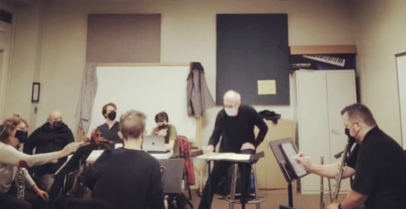

On the Thin Ice of Modern Life
2021 · flutes, clarinets, cello · ~10'
This piece explores the fragile nature of continuous consciousness in today’s noisy, distracting world. As in our lives, intricate underlying structures are obfuscated by cacophonous interruptions that challenge us even to finish a thought.
From the moment I knew I would be writing for members of Talea, I began to imagine and sketch what the sound world might be, reaching out to the performers with questions, then examples, but it wasn’t until I attended their premier of Oscar Bettison’s Arqueología del Neón that I understood just what the group was capable of. From that moment until I turned the piece in, I steeped myself in sounds and literature, and stretched to try to give the group something they would enjoy, something of value.
Talea blew me away with their professional and personal warmth. Barry, Rane, Chris, Matt, Caitlin, and Jim each and all treated the student works with the same care and dedication they brought to pieces by Oscar and Felipe, a testament to their character. Even more wonderful, I feel as though we have begun to become friends.

premiere
2021-10-30 · Talea Ensemble, conducted by Jim Baker · Griswold Hall, Peabody Institute, Baltimore, MD — recorded live at the premiere.
personnel
Barry Crawford, flute, bass flute, and alto flute · Rane Moore, clarinet, bass clarinet · Chris Gross, cello · Jim Baker, conductor
credits
Video courtesy of Peabody Recording Arts. This concert was part of the celebration of 150 years of composition at Peabody and received support from a 2020 Johns Hopkins Catalyst Award, awarded to Felipe Lara.